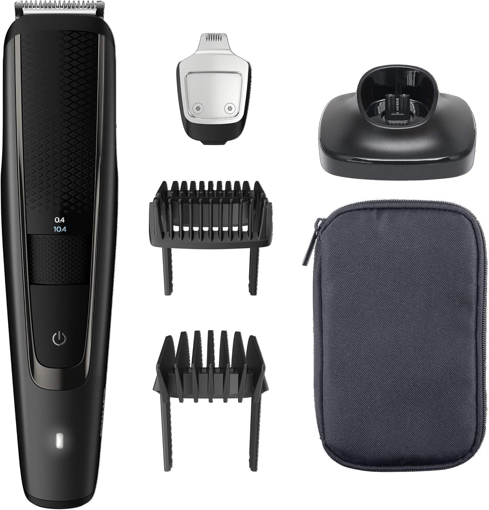

Escolha por categoria
Para casa
Seleção pensada para manutenção em casa, quando queres resolver cabelo, barba ou ambos sem transformar isso num hobby. Começa pelas escolhas mais fortes e usa os guias da revista para resolver a dúvida que ainda falte.
Braun Series 5 AIO5545
Indicada para quem quer tratar cabelo, barba e corpo com um só aparelho, sem encher a casa de ferramentas.
Ver produto
Philips Beardtrimmer BT3238/15
Indicado para quem quer manter a barba alinhada em casa com contornos limpos e pouco trabalho.
Ver produtoSe é para casa, corta complexidade
Os guias no fim ajudam a decidir entre uma solução tudo-em-um, uma ferramenta dedicada à barba ou uma compra mais económica para começar.
Melhores opções
Escolhas seguras para uso doméstico
Nesta categoria contam simplicidade, boa relação utilidade-esforço e margem para repetir o resultado sem grande curva de aprendizagem.



Philips Beardtrimmer BT5515/15
Controlo preciso no comprimento com várias posições
Como escolher
Como montar uma rotina de casa que se aguente
Em casa, compensa menos comprar como se fosses abrir um posto. O objetivo é resolver bem o essencial e usar mesmo o que compras.
- Se queres uma só ferramenta, confirma que cobre as zonas que realmente vais tratar.
- Se a barba é a prioridade, um aparador dedicado pode servir melhor do que um kit gigante.
- Se estás a começar, é preferível uma escolha simples e previsível a uma caixa cheia de extras.
Atalho de escolha
Escolhe pelo nível de simplicidade que queres
Há uma opção para resolver quase tudo, outra focada na barba e outra boa para primeira compra.
Uma máquina que resolve quase tudoVer produto
Braun Series 5 AIO5545
Indicada para quem quer tratar cabelo, barba e corpo com um só aparelho, sem encher a casa de ferramentas.
Barba curta sem complicaçãoVer produto
Philips Beardtrimmer BT3238/15
Indicado para quem quer manter a barba alinhada em casa com contornos limpos e pouco trabalho.
Primeira compra sem excessosVer produto
Hatteker Máquina Completa
Indicado para quem quer começar a cortar cabelo e a tratar da barba em casa com um só conjunto.
Revista OndeCortar
Ver mais guiasO que ler antes de comprar para casa
Estes guias ajudam a perceber quando basta uma solução simples, quando compensa subir de gama e que erros são comuns no uso doméstico.
Perguntas frequentes
Preciso de várias ferramentas em casa?
Nem sempre. Em muitos casos, uma máquina equilibrada ou um bom aparador de barba já resolvem a maior parte da manutenção.
Vale a pena cortar cabelo em casa?
Vale quando queres manter frequências curtas, poupar idas intermédias e aceitas aprender o teu corte dentro de limites realistas.
Explorar categoria
Para casa, menos aparelho costuma ser mais
Se consegues repetir o resultado com pouco esforço, a compra está bem feita. O resto é ruído.
Transparência: Alguns links da loja são afiliados. Se comprares através deles, o OndeCortar.pt pode receber uma comissão por compras elegíveis.